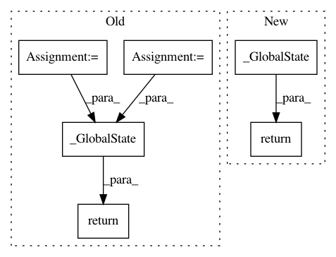

cec011e2a797a32a9b102a69d2d799256de7ca98,tensorflow_privacy/privacy/dp_query/quantile_adaptive_clip_sum_query.py,QuantileAdaptiveClipSumQuery,initial_global_state,#QuantileAdaptiveClipSumQuery#,118
Before Change
def initial_global_state(self):
See base class.
initial_l2_norm_clip = tf.cast(self._initial_l2_norm_clip, tf.float32)
noise_multiplier = tf.cast(self._noise_multiplier, tf.float32)
target_unclipped_quantile = tf.cast(self._target_unclipped_quantile,
tf.float32)
learning_rate = tf.cast(self._learning_rate, tf.float32)
sum_stddev = initial_l2_norm_clip * noise_multiplier
sum_query_global_state = self._sum_query.make_global_state(
l2_norm_clip=initial_l2_norm_clip,
stddev=sum_stddev)
return self._GlobalState(
noise_multiplier,
target_unclipped_quantile,
learning_rate,
sum_query_global_state,
self._clipped_fraction_query.initial_global_state())
def derive_sample_params(self, global_state):
See base class.
After Change
def initial_global_state(self):
See base class.
return self._GlobalState(
tf.cast(self._noise_multiplier, tf.float32),
self._sum_query.initial_global_state(),
self._quantile_estimator_query.initial_global_state())
def derive_sample_params(self, global_state):
See base class.
return self._SampleParams(
In pattern: SUPERPATTERN
Frequency: 3
Non-data size: 6
Instances
Project Name: tensorflow/privacy
Commit Name: cec011e2a797a32a9b102a69d2d799256de7ca98
Time: 2020-06-08
Author: galenandrew@google.com
File Name: tensorflow_privacy/privacy/dp_query/quantile_adaptive_clip_sum_query.py
Class Name: QuantileAdaptiveClipSumQuery
Method Name: initial_global_state
Project Name: tensorflow/privacy
Commit Name: 5433436b863ec9d5822e4261e1b0637a4396a197
Time: 2020-08-06
Author: schien@google.com
File Name: tensorflow_privacy/privacy/dp_query/gaussian_query.py
Class Name: GaussianSumQuery
Method Name: make_global_state
Project Name: tensorflow/privacy
Commit Name: 5ad8676d38b9ca37b82ebbc39d941d6a2888f1bc
Time: 2020-08-06
Author: schien@google.com
File Name: tensorflow_privacy/privacy/dp_query/gaussian_query.py
Class Name: GaussianSumQuery
Method Name: make_global_state